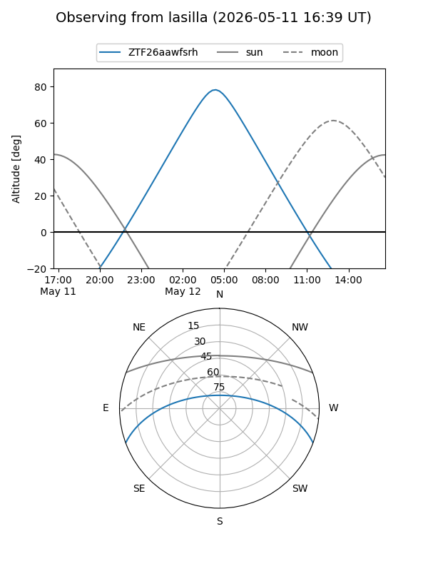
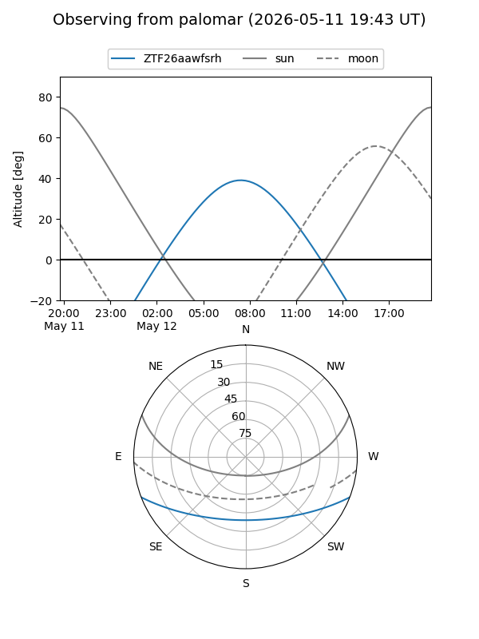

ZTF26aawfsrh
Target ZTF26aawfsrh at 2026-05-12 08:35
Aliases and brokers:
FINK: link
Lasair: link
ALeRCE: link
alt names
ZTF26aawfsrh (ztf,fink_ztf)
Coordinates:
equatorial (ra, dec) = 224.1420,-17.47127
equatorial (HMS+DMS) = 14:56:34.09,-17:28:16.56
galactic (l, b) = (340.7158,+36.05856)
Flags:
Photometry:
last ztfg=19.60
1 ztfg detections
Lightcurve
Visibility


Additional plots